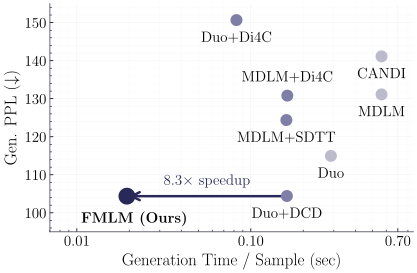
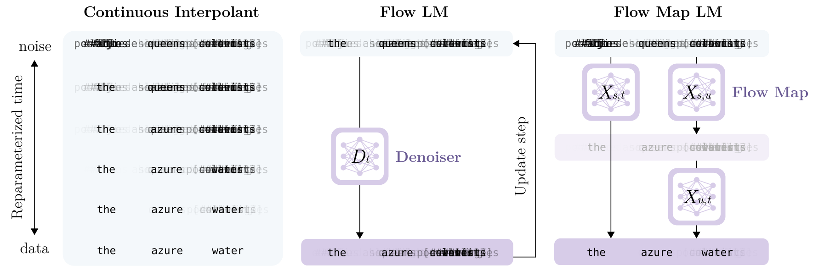
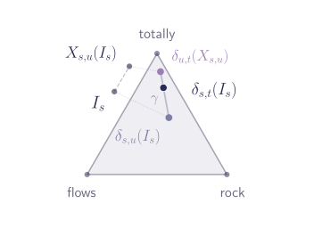
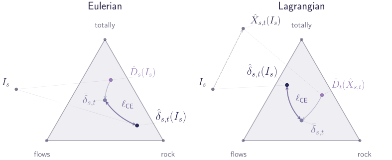
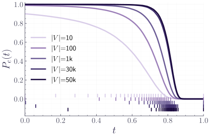
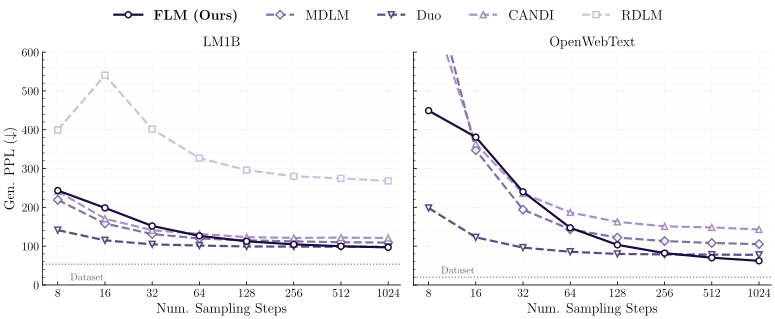
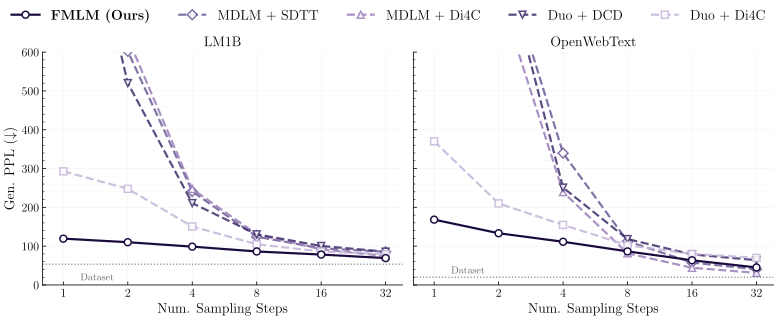
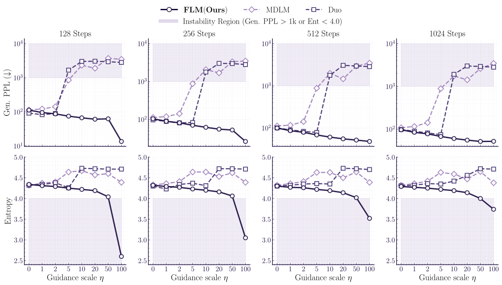
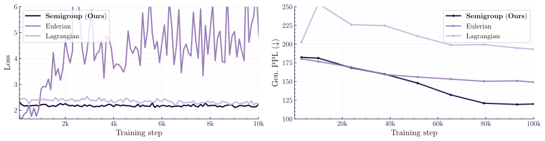

流映射语言模型：用连续去噪一步生成文本
Flow Map Language Models: One-step Language Modeling via Continuous Denoising
GitHub star 为 2026-10-20 的快照。阅读状态、进度与收藏只保存在你的浏览器里。
逐节精读
这部分按论文的章节顺序，用本站自己的话把整篇论文从头讲一遍。读懂某个概念需要的背景知识，会在第一次用到它之前单独讲清楚（青色框）。每个结论都尽量说出“因为什么、所以什么”。论文第 3 版以 CC BY 4.0 许可发布，所以原图直接放在讲到它的地方，并说明这张图怎么看；原图没有画到的概念，用本站的示意图补上。标“推算”的数字是本站根据论文数据算出来的，不是论文原话；标“本站数值计算”的数字是本站按论文公式自己算的；标“本站读代码”的内容来自官方仓库。本页依据 arXiv 第 3 版（v3，2026-05-20）。v1（2026-02-18，标题是 One-step Language Modeling via Continuous Denoising）的主方法和若干基线数字与 v3 不同，涉及的地方会单独说明。每节末尾有英文原文的链接。
0 导读：这篇论文解决什么问题
扩散语言模型最吸引人的地方，是它不必像自回归模型那样一个 token 接一个 token 地写，而是每一步同时改写整段文字，理论上可以用很少的步数写完一整段。可是现实中的扩散语言模型（MDLM、Duo、LLaDA 这些离散扩散模型）有一个顽疾：步数一少，生成的文字就迅速变成乱码或者不断重复的高频词。即使专门做了“少步蒸馏”，一步、两步生成的质量依然很差。
这篇论文认为，病根在离散扩散的结构里：它每一步都要在词表上抽样出具体的词，而为了算得动，同一步里各个位置是彼此独立地抽样的。步子小的时候每一步只改少数位置，独立抽样问题不大；步子一大，相关的词（比如“New”和“York”）被分开独立地抽，就会拼出“New Diego”这种不存在的组合。这个误差来自抽样方式本身，模型训练得再好也消除不了。
作者的办法是回到连续空间。他们把每个 token 写成一个 one-hot 向量（词表多大，向量就多长），整段文字就是一个很长的实数矩阵；生成时从高斯噪声出发，沿着一个确定性的常微分方程（ODE）把噪声连续地“推”到 one-hot 上，最后取 argmax 读出词。这个模型叫 FLM（Flow Language Model，流语言模型）。它的网络不直接预测“往哪走”，而是预测“每个位置最后会是哪个词”的概率，用交叉熵训练，再把这个概率换算成移动方向。在 LM1B 和 OpenWebText（OWT）上，FLM 用 1024 步生成时，生成困惑度略好于同规模的 Duo 和 MDLM。
连续表述带来的真正好处在第二步。因为 FLM 的生成过程是一条确定性的轨迹，“从某个时刻的状态出发，最后会走到哪里”是一个确定的函数，叫流映射（flow map）。把这个函数直接学出来，就能从噪声一步跳到文字。作者设计了一个叫双时间去噪器的重参数化，让流映射也可以写成每个位置上的一个概率分布，从而也能用交叉熵（KL）来蒸馏。蒸馏出的模型叫 FMLM（Flow Map Language Model）。一步生成时，FMLM 在 LM1B 上的生成困惑度是 119.34，在 OWT 上是 168.30；同样一步，蒸馏过的离散扩散基线要么超过 1000（乱码），要么样本熵明显塌缩（重复）。
读这篇论文时要记住它的规模：所有模型都是约 1.79 亿参数的 Transformer，数据是 LM1B（句长 128）和 OWT（长 1024），评价只看无条件生成的样本质量（生成困惑度和样本熵），没有报告似然，没有下游任务，也没有自回归基线。实验部分的“结果的份量”一节专门讨论这些数字能说明什么。
读完这部分，你应该能回答这几个问题：
- 离散扩散为什么步数一少就崩？蒸馏为什么救不回来？
- 连续扩散语言模型过去为什么一直不如离散扩散？这篇论文改了哪几处？
- 把 token 写成 one-hot 之后，为什么网络应该预测“干净数据的后验概率”而不是速度？为什么能用交叉熵？
- 流映射是什么，和一致性模型、shortcut 模型、MeanFlow 是什么关系？双时间去噪器为什么总落在单纯形上？
- 为什么离散扩散在样本层面没有对应的“流映射”？
- “解码错误率”时间重参数化在做什么？它和 Duo 的扩散变换算子是什么关系？
- “一步生成超过对手 8 步”“8.3 倍加速”这些数字是在什么条件下测出来的，哪些条件没有对齐？
- 它和同年的 LangFlow、ELF 两篇连续扩散语言模型有什么不同？
1 引言：并行生成的承诺，卡在“少步”上
自回归模型生成 \(L\) 个 token 要调用网络 \(L\) 次，但每次只为一个新位置做计算：前面位置的中间结果（KV 缓存）可以保存下来重复使用。扩散语言模型的每一步都要把整段 \(L\) 个位置一起送进网络，而且因为每一步整段都在变，通常没法缓存。所以扩散模型一步的计算量，大致相当于自回归模型处理整段文字的计算量。
由此得到一个粗略的门槛：扩散模型的步数必须远小于 \(L\)，总计算量才可能比自回归少。论文里 OWT 的序列长 1024，如果扩散模型也用 1024 步，就谈不上更快。这里说的网络调用次数，常记作 NFE（number of function evaluations）。真实的墙钟时间还取决于批大小和硬件：自回归在批很小时被显存带宽卡住，扩散一步能把整段并行算完，所以在批很小时，少步扩散的优势会比计算量估计的更大（参见 vLLM 精读页第 1 节对“读参数”开销的解释）。
论文开头先摆出这个门槛：自回归模型训练时可以并行（teacher forcing），生成时却只能一个一个来；离散扩散希望每一步并行地写出很多 token，但它的质量在少步时下降得很快，而少步恰恰是它要兑现速度优势的前提。作者把原因归到上面说的“因式分解近似”（第 2 节细讲）：序列的状态空间大得无法直接建模，只能假设同一步里各位置独立。
连续扩散语言模型在连续空间里表示和去噪 token，不需要这个近似。它的生成可以写成一条由速度场（或分数函数）驱动的确定性轨迹，所以能直接借用图像领域最近的少步方法：学习流映射，一次函数评估就把噪声送到数据。但学界普遍的看法是连续扩散语言模型不如离散的，近两年的主力工作（如 Mercury、LLaDA）都是离散扩散。这篇论文要挑战的就是这个看法。


论文列出的贡献有三条。第一，证明 one-hot 上的连续流定义了唯一的流映射，可以直接学来做少步生成，并证明离散扩散在样本层面没有这样的结构。第二，把流和流映射都重参数化成落在概率单纯形上的量，由此提出几种交叉熵目标，并找出一个时间重参数化来解决以前连续方法训练不稳定的问题。第三，在 LM1B 和 OWT 上验证：FLM 与最好的离散扩散相当，FMLM 在一步时接近对手 8 步的质量；连续表述还让推理时的引导（guidance）更稳定。
- “更快”在这篇论文里主要是指网络调用次数更少（1 步对 8 步），而不是和自回归模型比墙钟时间。论文没有自回归基线。
- “匹配最好的离散扩散”比较的是 1024 步下的生成困惑度，不是困惑度（似然）。FLM 没有报告似然（5.1 节解释原因）。
2 背景：离散扩散的因式分解误差，和连续扩散过去的困境
2.1 离散扩散为什么步数一少就崩
把词表记作 \(V\)，一段长为 \(L\) 的文字就是 \(\mathbf{y}=(\mathbf{y}^1,\dots,\mathbf{y}^L)\in V^L\)。离散扩散先定义一个“破坏”文字的过程：随着时间推进，token 被换成 [MASK]（掩码扩散，如 MDLM）或随机换成别的词（均匀态扩散，如 SEDD 的 uniform 版本和 Duo）。生成时反过来：从全 [MASK] 或全随机的序列出发，在一串时间点上一步步“修复”。每一步要从一个转移分布 \(p_{t|s}(\mathbf{y}_t\mid\mathbf{y}_s)\) 里抽出下一时刻的整段文字，这叫祖先采样（ancestral sampling）。注意本文的时间方向：\(t=0\) 是噪声，\(t=1\) 是数据，所以生成是 \(s<t\) 地往前走。
问题在于这个转移分布定义在 \(V^L\) 上。词表 3 万、长度 128，可能的序列有 \(30522^{128}\) 种，网络不可能为每一种输出一个概率。所以所有离散扩散都用一个因式分解的近似：
每个因子是“看着整段旧状态，第 \(l\) 个位置在新时刻是什么”的边缘概率。网络输出这 \(L\) 个边缘分布只需要 \(L\times|V|\) 个数，算得动；代价是假设了给定旧状态时，各位置的新值彼此独立。
这个独立假设只有在 \(t\to s\)（步长无穷小）时才严格成立：步长很小时，一步之内最多只有一个位置会变，独立与否无所谓。步长一大，一步之内要同时决定很多相关的位置，独立抽样就会把相关性丢掉。下面用论文图 3 的玩具例子算一遍。

论文强调，这是一个结构性的问题，不能靠把模型训练得更好来解决：哪怕网络给出的每个边缘分布都是精确的，独立地抽样仍然会拼错。少步蒸馏（SDTT、DCD、Di4C）能让学生模型在中等步数下接近老师，但只要学生的输出仍是“每个位置一个独立的分布”，一步、两步时就仍然要面对这个误差。第 5 节的实验会看到两种典型的失败：要么生成困惑度冲到 1000 以上（各位置互不相干的词堆在一起），要么模型“学乖了”只输出最常见的几个词，生成困惑度看着不高，样本熵却塌缩。
上面这个交互组件把同一件事放到一张 16 个位置的“订机票”画布上：画布里出发城市和到达城市各占两个词，彼此强相关，其余位置要么确定、要么彼此独立。“模型”是精确的条件分布，所以出错只可能来自“同一步独立抽样”。把步数调小，每步揭开的位置变多，拼出“New Diego”这类无效组合的概率会明显上升。FLM 要解决的就是这个问题：它不在中间步骤抽样，而是让整段状态连续地移动。
2.2 连续扩散语言模型过去为什么一直落后
连续扩散做语言并不新。这篇论文的出发点之一，就是把前人失败的原因一个个拆开处理。下面先把前人的做法和遇到的困难列出来（综合本文第 3.1 节、附录 A 和本站 Diffusion-LM 精读页）：
- 表示要自己学，学不好就塌。Diffusion-LM（2022）把每个词映射成一个可学习的低维向量（实验里 16 维或 128 维），在这些向量上加高斯噪声。嵌入和去噪网络一起训练时，嵌入可能缩成一团或者胀得很大，需要专门的正则化；生成结束时还要把连续向量“取整”成最近的词，取整出错也是误差来源。CDCD（Dieleman 等，2022）对嵌入做 L2 归一化来防止这个问题。另一条路是用冻结的预训练嵌入（如 BERT），但那些嵌入是为别的任务学的，未必适合做扩散。
- 似然差。作为“语言模型”，最基本的指标是困惑度。Diffusion-LM 报告的似然明显差于自回归模型；Plaid（2023）用约 10 亿参数才在似然上超过 1.24 亿参数的 GPT-2（见 Diffusion-LM 精读页第 9 节）。而且连续模型要算似然，得另外推导一个界或额外训练，不像离散扩散那样直接给出 ELBO。
- 时间花在了不该花的地方。数据只落在少数几个点上（每个位置只能是 \(|V|\) 个词之一），加噪过程大部分时间里“看不出是哪个词”，真正决定词的只有很窄的一段时间（第 4 节会算出具体有多窄）。均匀采样训练时间，会把大量训练信号浪费在什么都没发生的时段。CDCD 为此提出按训练损失自适应地扭曲时间（time warping）。
- 单纯形上的方法另有麻烦。SSD-LM、TESS 等把每个位置表示成词表上的概率向量，在单纯形上做扩散；RDLM 等用黎曼几何。它们约束了状态必须在单纯形或某个流形上，推导和实现都更复杂。
与此同时，SEDD、MDLM 把离散扩散做得又简单又好，困惑度逼近同规模自回归模型，后来的大模型（LLaDA、Dream、Mercury 等）都沿着离散路线走（这是本站的归纳）。FLM 的应对可以先概括成四条，后面几节逐一展开：用 one-hot 代替学出来的嵌入（不用学、不会塌、不用取整）；在无约束的欧氏空间里做最简单的线性插值（不用单纯形约束）；让网络预测干净数据的后验并用交叉熵训练（第 3.3 节）；按“解码错误率”重新分配时间（第 4 节）。似然问题则没有正面解决：论文直接不报告似然。
3 理论框架：one-hot 上的流，和它的流映射
3.1 连续表示：直接用 one-hot
要在离散的文字上做连续的流，先得把文字放进一个连续空间。一般的做法是选一个嵌入 \(f:\mathbf{y}\mapsto\mathbf{x}\) 和一个解码 \(g:\mathbf{x}\mapsto\mathbf{y}\)，要求 \(g(f(\mathbf{y}))=\mathbf{y}\)，然后在连续空间里学 \(\mathbf{x}\) 的分布。生成时先在连续空间里采出 \(\hat{\mathbf{x}}\)，再用 \(g\) 解码成文字。
FLM 选了最朴素的一种：每个位置写成长为 \(|V|\) 的 one-hot 向量，整段文字是一个 \(L\times|V|\) 的矩阵；解码就是每个位置取 argmax。
这样做有三个直接的好处：表示是无损的（argmax 一定能还原原词）；不需要学嵌入，也就没有嵌入塌缩或胀大的问题；也不需要额外的取整模型。代价是维度很高：OWT 用 GPT-2 分词器，\(|V|=50257\)，一段 1024 个 token 的文字是一个 \(1024\times50257\) 的实数矩阵。论文还强调，它和以前一些 one-hot / 单纯形方法的不同在于：不要求状态留在单纯形上，加了高斯噪声的向量可以有负数、可以离单纯形很远，整个流就在普通的欧氏空间 \(\mathbb{R}^{L\times|V|}\) 里进行。
3.2 流语言模型：插值、概率流和速度
设想有两堆点：一堆是标准高斯噪声 \(\mathbf{x}_0\sim\mathsf{N}(0,I)\)，一堆是数据 \(\mathbf{x}_1\sim p_1\)。随便各拿一个配成一对，在它们之间连一条直线，时刻 \(t\) 的位置是
所有这样的点在时刻 \(t\) 的分布记为 \(p_t\)，它在 \(t=0\) 是噪声分布，在 \(t=1\) 是数据分布。这个构造叫随机插值（stochastic interpolant，Albergo、Boffi、Vanden-Eijnden）；同一件事在 Lipman 等人的论文里叫流匹配（flow matching）。
关键的事实是：存在一个速度场 \(b_t(\mathbf{x})\)，让一个点从噪声出发、沿 \(\dot{\mathbf{x}}_t=b_t(\mathbf{x}_t)\) 移动，它在每个时刻的分布恰好就是 \(p_t\)。这个 ODE 叫概率流。速度场就是“经过 \(\mathbf{x}\) 的所有直线，它们速度的平均”：
单条直线会互相交叉，但取平均后的速度场是一个确定的函数，沿它走的轨迹互不相交：同一个起点永远走到同一个终点。因为 \(b_t\) 是一个条件期望，它可以用最简单的平方损失回归学出来：随机取 \(t\)、取一对 \((\mathbf{x}_0,\mathbf{x}_1)\)，让网络在 \(I_t\) 处的输出逼近 \(\mathbf{x}_1-\mathbf{x}_0\)。生成时从噪声出发，用欧拉法等数值方法把 ODE 积分到 \(t=1\)。
这和 Diffusion-LM 用的 DDPM 式扩散本质相同，只是写法不同：DDPM 的反向过程是随机的（每步加噪），概率流是它的确定性版本。本文用确定性的版本，因为后面的流映射需要“同一起点走到同一终点”。
FLM 就是把上面这一套原样用在 one-hot 表示上：\(\mathbf{x}_1\) 是一段文字的 one-hot 矩阵，\(\mathbf{x}_0\) 是同样形状的高斯噪声矩阵。下图用一个只有 3 个词的词表，画出一个位置在插值路径上的样子。
3.3 去噪器：把回归变成分类
直接学速度在这里会遇到一个具体的困难。速度的回归目标是 \(\mathbf{x}_1-\mathbf{x}_0\)，其中的 \(\mathbf{x}_0\) 是满秩的高斯噪声，每个位置有 \(|V|\) 维。而网络最后一层要把内部的 \(d\) 维特征（这里 \(d=768\)）映射成 \(|V|\) 维输出：它输出的向量只能落在一个最多 \(d\) 维的子空间里，根本拼不出 5 万维的任意噪声。这就是 Li 和 He（2025，“Back to Basics”）在高维图像上指出的问题：当输出维度远大于网络宽度时，预测噪声或速度会欠拟合。论文的消融里，直接回归速度的 FLM 生成困惑度高达 3801.36，基本没学成（第 5.5 节）。
办法是改为预测干净数据的后验均值，也就是去噪器：
第二个等式说明速度和去噪器只差一个已知的线性变换，所以学会去噪器就等于学会了速度。差别在于：速度里的噪声部分 \(-\mathbf{x}\) 由输入直接提供，网络只需要输出 \(D_t\)，而 \(D_t\) 的目标是 one-hot 数据，结构简单、维度上很“稀疏”。
更进一步，因为 \(\mathbf{x}_1\) 的每个位置都是 one-hot，它的条件期望有一个很干净的解释（论文引理 3.1）：
也就是说，最优去噪器在第 \(l\) 个位置的输出，正是“看着整段带噪的状态，这个位置最后是哪个词”的后验概率向量，它一定落在概率单纯形 \(\Delta^{|V|-1}\) 上（各分量非负、和为 1）。推导只有一行：one-hot 向量的期望，就是各个 one-hot 按概率加权的和，即概率向量本身。
既然最优解是概率，网络就该在每个位置用 softmax 输出，并且可以用交叉熵训练（论文命题 3.2）：
命题 3.2 说了两件事。第一，最优去噪器是这个损失唯一的最小值点。理由是交叉熵可以拆成“不可约的条件熵”加上“真实后验到模型的 KL 散度”，前者与模型无关，后者只在模型等于真实后验时为零。第二，交叉熵训练得好，生成的分布就好：如果模型比最优解多出的交叉熵（超额风险）不超过 \(\epsilon\)，那么在提前停止的时刻 \(1-\xi\)，生成分布和真实分布的 2-Wasserstein 距离平方不超过 \(C\epsilon\)，常数 \(C\) 取决于 \(\xi\) 和模型的 Lipschitz 常数。提前停止是为了避开 \(b_t\) 换算里 \(1/(1-t)\) 在 \(t\to1\) 时的发散。
平方损失和交叉熵在“最优解”上一致（都是后验均值），区别在优化的难易。平方损失把每一维的误差同等对待，而 5 万维里绝大多数是 0，模型对正确那一维给 0.1 还是 0.01，平方误差几乎一样；交叉熵对正确那一维的概率取对数，0.1 和 0.01 差了一个 \(\log 10\)，梯度信号强得多。语言模型、BERT、掩码扩散的训练都用交叉熵，就是这个原因。论文的消融（第 5.5 节）显示，同样预测去噪器，平方损失是 129.04，加 softmax 后用平方损失是 120.16，换成交叉熵是 96.91。
和离散扩散的关系。读到这里会发现，FLM 网络输出的东西和离散扩散几乎一样：都是每个位置一个“干净 token 的后验分布” \(p^l_{1|t}\)，都用逐位置的交叉熵训练（MDLM、Discrete Flow Matching 都是如此）。不同之处全在用法：离散扩散拿这些边缘分布去独立抽样下一个状态，于是有第 2 节的因式分解误差；FLM 拿它们按上式算出精确的速度，整段状态一起确定性地移动，没有任何抽样。论文认为，正是这个区别让连续流可以被精确地蒸馏成少步生成器。
和 Duo 的关系。Duo 证明过：对 one-hot 加高斯噪声、每个时刻取 argmax，得到的 token 分布正好是一个均匀态离散扩散（见 Duo 精读页第 3 节）。FLM 的状态 \(I_t\) 就是这样一个“one-hot 加高斯噪声”的向量（线性插值和 Duo 的方差保持写法只差一个缩放，argmax 不受缩放影响）。所以可以这样看两者：Duo 把这个连续状态取了 argmax，在离散的一侧建模，生成时仍然要抽样；FLM 干脆不取 argmax，直接在连续的一侧建模和生成。Duo 的离散一致性蒸馏（DCD）借用了高斯一侧的确定性轨迹来构造训练配对，但学生模型仍是离散的、逐位置独立抽样，所以一步时仍然崩（第 5.3 节 Duo+DCD 一步在 LM1B 上是 1224.52）。第 4 节还会看到，FLM 的时间重参数化在数学上就是 Duo 的扩散变换算子。
3.4 流映射语言模型：直接学 ODE 的积分
概率流 ODE 给出了每个时刻往哪走，但要从 \(t=0\) 走到 \(t=1\)，得用数值方法一小步一小步积分。步子一大，欧拉法沿着起点的切线走，轨迹一弯就偏了。流映射 \(X_{s,t}\) 是这个 ODE 的“解算子”：给定时刻 \(s\) 的状态，直接告诉你时刻 \(t\) 的状态，\(X_{s,t}(\mathbf{x}_s)=\mathbf{x}_t\)。有了它，一步生成就是 \(\hat{\mathbf{x}}_1=X_{0,1}(\mathbf{x}_0)\)；多走几步只是把几段流映射接起来，每一段都是精确的。
流映射可以由三个条件完全刻画：起点条件 \(X_{s,s}(\mathbf{x})=\mathbf{x}\)；切线条件，即 \(t\to s\) 时 \(\partial_t X_{s,t}\) 等于速度 \(b_t\)；以及半群条件 \(X_{u,t}(X_{s,u}(\mathbf{x}))=X_{s,t}(\mathbf{x})\)，意思是“先跳到 \(u\) 再跳到 \(t\)”和“直接跳到 \(t\)”结果一样。半群条件也可以换成两个微分形式：沿着轨迹对终点时间求导的拉格朗日形式，和对起点求空间导数的欧拉形式。图像领域近两年的少步方法，基本都是在用其中一种条件学流映射（论文附录 B，Boffi 等人的“flow map matching”框架）：
按惯例把流映射参数化为 \(X_{s,t}(\mathbf{x})=\mathbf{x}+(t-s)\,v_{s,t}(\mathbf{x})\)，其中 \(v_{s,t}\) 是从 \(s\) 到 \(t\) 的平均速度（MeanFlow 里的 “mean flow”）。这个写法自动满足起点条件；切线条件变成 \(v_{t,t}=b_t\)。用半群条件蒸馏时，损失有两项：非对角项要求 \(X_{s,t}(I_s)\) 去匹配“先到 \(u\) 再到 \(t\)”的结果（加 stop-gradient），对角项要求 \(v_{t,t}\) 去匹配预训练好的速度 \(\hat b_t\)。把对角项里的 \(\hat b_t\) 换成插值的速度 \(\dot I_t\)，就变成不需要老师的直接训练。
双时间去噪器。上面的平方损失没有利用“数据是 one-hot”这一结构。第 3.3 节的经验是：把速度换成落在单纯形上的去噪器，再用交叉熵训练，效果好得多。作者想对流映射做同样的事。他们注意到去噪器可以改写成 \(D_t(\mathbf{x})=\mathbf{x}+(1-t)\,b_t(\mathbf{x})\)，也就是“用当前速度一口气走完剩下的全部时间 \(1-t\)”得到的点。仿照这个写法，用平均速度代替瞬时速度，定义双时间去噪器：
它的含义是：按“从 \(s\) 到 \(t\) 的平均速度”走完从 \(s\) 到 1 的全部剩余时间，会到达哪里。论文命题 3.3 证明了它的四个性质：
- 流映射可以精确还原：\(X_{s,t}(\mathbf{x})=\frac{1-t}{1-s}\,\mathbf{x}+\frac{t-s}{1-s}\,\delta_{s,t}(\mathbf{x})\)。即 \(X_{s,t}\) 是当前状态和 \(\delta_{s,t}\) 的加权平均，权重只取决于时间。
- 它总在单纯形上：每个位置的 \(\delta_{s,t}(\mathbf{x})^l\in\Delta^{|V|-1}\)。
- 对角线上就是普通去噪器：\(\delta_{s,s}=D_s\)。
- 它也满足半群条件：\(\delta_{s,t}(\mathbf{x})=\gamma\,\delta_{s,u}(\mathbf{x})+(1-\gamma)\,\delta_{u,t}(X_{s,u}(\mathbf{x}))\)，其中 \(\gamma=\frac{(1-t)(u-s)}{(1-u)(t-s)}\in[0,1]\)。
第二条性质是整套设计的关键，它为什么成立？论文附录给出的证明可以用本站的一段推导来理解。沿着轨迹，速度是 \(\dot{\mathbf{x}}_r=(D_r-\mathbf{x}_r)/(1-r)\)，于是
右边的权重 \(\frac{(1-s)(1-t)}{t-s}\cdot\frac{1}{(1-r)^2}\) 在 \([s,t]\) 上积分正好等于 1（推算），所以 \(\delta_{s,t}\) 是沿途各个时刻去噪器输出的加权平均。每个去噪器输出都是概率向量，概率向量的加权平均还是概率向量，所以 \(\delta_{s,t}\) 一定在单纯形上。对比之下，流映射 \(X_{s,t}\) 本身含有高斯噪声的成分，会离开单纯形（原文图 4）。
这样，网络可以像去噪器一样在每个位置用 softmax 输出 \(\hat\delta_{s,t}\)，并用 KL 散度来施加半群条件（论文命题 3.4）：
第一项是非对角的半群项：学生自己先跳 \(s\to u\)、再跳 \(u\to t\)，两段的双时间去噪器按 \(\gamma\) 混合成一个“半群老师” \(\bar\delta_{s,t}\)（停止梯度），去监督学生直接从 \(s\) 跳到 \(t\) 的输出。第二项是对角项，把学生在 \(s=t\) 时的输出拴在预训练好的 FLM 去噪器 \(\hat D_t\) 上。命题 3.4 说，真正的双时间去噪器是这个目标唯一的临界点。用 KL 而不是交叉熵，只是因为 KL 的最小值是 0，训练时可以直接读出“还差多少”；两者只差一个常数，梯度相同。把对角项里的 \(\hat D_t\) 换成数据的 one-hot，KL 就退化成第 3.3 节的交叉熵，这就是不需要老师的直接训练版本。

另外两种刻画。论文附录 C 还把拉格朗日和欧拉两种微分刻画也改写成双时间去噪器的形式，得到对应的交叉熵蒸馏与自蒸馏目标。它们的“老师”要用到学生输出对时间或空间的导数，需要雅可比-向量积，而且因为导数修正项的存在，老师信号可能暂时离开单纯形。实验里半群形式最好（第 5.5 节），所以正文只用半群形式。

3.5 离散扩散为什么没有样本层面的流映射
自然会问：离散扩散能不能也有一个“离散流映射”？论文的回答分两层。在分布层面，离散扩散的连续时间马尔可夫链满足一个确定性的“主方程” \(\dot p_t=Q_tp_t\)，其中速率矩阵 \(Q_t\) 是 \(|V|^L\times|V|^L\) 的，所以概率分布的演化确实有一个流映射。但这个对象大到无法计算和表示，实践中只能用因式分解近似，近似后的映射在少步时就不准了。
在样本层面，论文命题 3.5 证明这条路根本走不通：对任意有限集合 \(S\) 上的任意分布 \(\mu\)，总存在一个分布 \(\nu\)，无法写成 \(\mu\) 经某个确定性映射 \(f:S\to S\) 推过去的结果。证明很短：确定性映射推出来的每个概率，都是 \(\mu\) 的若干个原子概率之和，所以任何非零概率至少是 \(\mu\) 的最小非零原子 \(\mu_{\min}\)；取一个 \(\nu\) 让某个点的概率是 \(\mu_{\min}/2\)，就没有映射能做到。举个最小的例子：噪声是两个等概率的状态（各 50%），任何确定性映射推出来的概率只能是 0、50% 或 100%，永远得不到“30% 对 70%”。连续噪声没有这个限制，因为连续分布可以被任意细地切分。
4 算法细节：时间怎么分配、蒸馏怎么采样、怎么引导
4.1 时间重参数化：按“解码进度”均匀分配时间
图像扩散通常训练时均匀采样 \(t\in[0,1]\)、生成时用等间距的网格。作者发现这在 one-hot 上不好用，因为“决定每个位置是哪个词”这件事集中发生在一个很窄的时间段里，词表越大越窄。为了量化这一点，论文用解码错误率：
即如果在时刻 \(t\) 停下来直接取 argmax，平均有多大比例的位置会读错。它从 \(P_e(0)=1-1/|V|\)（纯噪声，随便猜）降到 \(P_e(1)=0\)。注意它只取决于噪声和 \(t\)，与数据是什么无关：要读对，真实那一维的值 \(t+(1-t)z_k\) 必须压过其余 \(|V|-1\) 维的 \((1-t)z_j\)。

本站按上面的定义做了数值计算，可以把“窄”说得更具体。以 OWT 的 \(|V|=50257\) 为例：\(t=0.5\) 时解码错误率仍有 99.9%，\(t=0.7\) 时 96.7%，\(t=0.8\) 时 58.7%，\(t=0.85\) 时 8.4%，\(t=0.9\) 时已经接近 0（本站数值计算）。从“完成 5% 的解码进度”到“完成 95%”，只对应 \(t\in[0.717,0.856]\) 这一段，宽度约 0.14。如果训练时均匀采样 \(t\)，只有约 14% 的样本落在这一段；生成时用 1024 个等间距步，也只有约 143 步落在这里（推算）。
作者的做法沿用 CDCD 和 Stancevic 等人的思路：找一个单调递增的函数 \(\tau(t)\)，训练时在 \(\tau\) 上均匀采样，生成时在 \(\tau\) 上取等间距网格，再换回 \(t\)。他们把“解码进度”直接当作新的时间：
这样，\(\tau\) 上每走相同的一段，读对的位置比例就增加相同的量。作者说这个选择对训练稳定和生成质量都至关重要，是 FLM 能扩到 \(|V|\approx5\) 万的原因。实现上，\(P_e(t)\) 没有闭式，作者用 Gauss-Hermite 积分预先在 \([0,1]\) 的网格上算好，拟合三次样条，正反两个方向查表，训练时没有额外开销（附录 E；论文写网格是 1000 个点，官方代码 utils.build_luts 默认是 10000 个点，本站读代码）。
它就是 Duo 的扩散变换算子。附录 C.6 把 \(\tau\) 和 CDCD 的“熵时间”联系起来：借助 Fano 不等式，在词表均匀分布的假设下 \(\tau(t)\le\sigma(t)+O(1/\log|V|)\)，其中 \(\sigma\) 是按条件熵线性化的时间。本站还注意到一个更直接的对应：“在时刻 \(t\) 对 one-hot 加噪向量取 argmax、读对的概率”正是 Duo 第 3.1 节里扩散变换算子 \(\mathcal{T}\) 的定义所计算的量，两者满足 \(P(\text{读对})=\mathcal{T}+(1-\mathcal{T})/|V|\)，代入上式恰好得到 \(\tau=\mathcal{T}\)（按 \(t/(1-t)\) 这个信噪比换算）。官方代码里计算 \(\tau\) 的函数把连续一侧的时间叫 gamma、离散一侧叫 alpha，算的正是“取 argmax 读对的概率”换算出的离散保留率（本站读代码）。换句话说，FLM 的“重参数化时间”就是“对应的均匀态离散扩散走到了哪一步”。
4.2 蒸馏的时间采样和边界采样
蒸馏 FMLM 时，对角项在 \(\tau\) 上均匀采样一个时刻；非对角项要采三个时刻 \((s,u,t)\)。作者的做法是：先采一个步长 \(h\sim\mathsf{U}[0,1]\)，再采起点 \(\tau(s)\sim\mathsf{U}[0,1-h]\)，令 \(\tau(t)=\tau(s)+h\)，中点 \(\tau(u)\) 取两者在 \(\tau\) 上的正中间。和 shortcut 模型只在 2 的幂次网格上训练不同，这里 \((s,t)\) 是连续采样的，模型能学到所有尺度的跳跃；取中点则让半群条件的两段长度相当。
问题出在起点附近。\(\tau(t)\) 在 \(t\) 靠近 0 的地方几乎是平的（原文图 9），于是按 \(\tau\) 采样时，起点 \(s\) 很少真正落在 0 附近。可一步、两步生成恰恰要从 \(s=0\) 直接跳到 \(t=1\)。作者因此固定以 \(p=1/32\) 的概率直接采 \((s,t)=(0,1)\) 这个边界对，保证一步生成有足够的训练信号。消融显示去掉它，一步生成困惑度从 119.34 变成 142.61，熵从 4.16 掉到 3.81（第 5.5 节）。
附录 E 补充了几处实现细节：FLM 和 FMLM 都训练相同的超参（批 512、学习率 \(3\times10^{-4}\)）；每个批次一分为二，一半做对角项（流匹配）、一半做非对角项（蒸馏），比例 1:1；官方代码中学生从 FLM 的权重初始化，并额外加一个零初始化的时间嵌入来接收第二个时间（本站读代码）。
4.3 推理时引导：在欧氏空间里外推
连续流在欧氏空间里运行，所以图像扩散里成熟的引导方法可以直接用在速度或去噪器上。论文演示了两种。
自引导（autoguidance，Karras 等，2024）：拿一个“弱一些”的模型（训练步数少、更小，或者同一个模型加 dropout），把速度从弱模型往强模型的方向外推：
离散扩散没有速度，只能在对数概率上做同样的外推：\(\log\hat p^{(\text{guided})}=\log\hat p^{(\text{weak})}+\eta(\log\hat p-\log\hat p^{(\text{weak})})\)，即 \(\hat p^{(\text{guided})}\propto(\hat p^{(\text{weak})})^{1-\eta}\hat p^{\,\eta}\)。这是乘性的：\(\eta\) 大时会把模型已有的峰放大很多倍，再叠加逐位置独立抽样，作者认为这会放大因式分解的误差。
奖励引导（Flow Map Reward Guidance，FMRG，本文部分作者的另一篇论文，ICML 2026）：给定一个只在干净文字上定义的奖励函数 \(r\)（比如一个情感分类器），每一步先用流映射走一步，再沿奖励的梯度推一下：
这里的关键是 \(X_{t_n,1}\)：流映射能从任何中间状态一步“预演”出最终文字，而且对输入可微，所以奖励模型只需要在干净数据上训练。离散扩散没有样本层面的流映射，要做分类器引导，就得训练一个能看懂各个加噪程度的分类器，代价高得多。作者还指出，同样的“一步预演终点”对强化学习微调也有用：只看最终奖励的 rollout 可以便宜很多。
4.4 把算法串起来
# 本站根据论文算法 5–8 改写的伪代码（t = 0 噪声，t = 1 数据）
# FLM 训练
x1 = onehot(y) # [L, |V|]
x0 = randn_like(x1)
t = t_of_tau(rand()) # 在 τ 上均匀采样，再换回 t
It = (1 - t) * x0 + t * x1
loss = -(x1 * log_softmax(net(It, t))).sum()
# FLM 生成（欧拉法，N 步）
x = randn(L, V)
for n in range(N):
t, t_next = t_of_tau(n / N), t_of_tau((n + 1) / N)
D = softmax(net(x, t))
x = x + (t_next - t) * (D - x) / (1 - t)
y = x.argmax(-1)
# FMLM 生成（流映射，N 可以是 1）
x = randn(L, V)
for n in range(N):
s, t = t_of_tau(n / N), t_of_tau((n + 1) / N)
delta = softmax(student(x, s, t)) # 双时间去噪器，落在单纯形上
x = (1 - t) / (1 - s) * x + (t - s) / (1 - s) * delta
y = x.argmax(-1)上面的 FMLM 生成循环是论文算法 8 的确定性版本。附录 E 说实际评测用的是一致性轨迹模型（CTM）的 “\(\gamma\)-采样”，并取“最优的 \(\gamma\)”，但没有给出取值。官方代码里，\(\gamma>0\) 时每一步先跳到比目标更靠近数据的时刻，再注入新的高斯噪声退回到目标时刻；\(\gamma=1\) 相当于“每步先预测终点、再重新加噪”，即一致性模型的多步采样。官方评测脚本默认 LM1B 用 \(\gamma=0.8\)、OWT 用 \(\gamma=1.0\)（本站读代码）。所以 2 步、4 步的数字来自带随机重噪的采样，不是严格的流映射复合；1 步时两者没有区别。
5 实验：多步追平、一步领先，以及这些数字的份量
5.1 实验是怎么设计的
数据与模型。两个数据集：LM1B（One Billion Word，用 bert-base-uncased 分词，\(|V|=30522\)，序列打包成长 128）和 OWT（OpenWebText，GPT-2 分词器，\(|V|=50257\)，长 1024）。模型沿用 MDLM 和 Duo 的设置：12 层的 DiT（扩散 Transformer），带 RoPE 位置编码和 AdaLN 时间条件，论文记为 1.79 亿参数（v1 写的是 1.70 亿）。官方配置的隐藏维度是 768，输入层是一个 \(|V|\times768\) 的矩阵，对整个 one-hot 噪声矩阵做稠密乘法（本站读代码）。
训练。FLM 从零训练 100 万步，批 512，Adam，学习率 \(3\times10^{-4}\)，2500 步预热后恒定。这和 MDLM、Duo 的协议相同，换算成 token 数，LM1B 约 655 亿、OWT 约 5240 亿（推算：100 万 × 512 × 序列长）。FMLM 从训练好的 FLM 蒸馏 10 万步，其余超参相同。作者发现蒸馏收敛得比 FLM 训练快得多。
对手。多步对比：掩码扩散 MDLM、均匀态扩散 Duo、连续的黎曼扩散 RDLM、离散连续混合的 CANDI。LM1B 上 MDLM、Duo、CANDI 由作者用相同设置从头训练，RDLM 用官方 100 万步检查点；OWT 上 CANDI、Duo、MDLM 用各自作者发布的检查点，RDLM 因为没有官方检查点而缺席。所有离散基线用温度 1.0 的祖先采样。少步对比：MDLM+SDTT、Duo+DCD，以及两者各配 Di4C。LM1B 上 SDTT 和 DCD 由作者复现（8 轮，每轮 1 万步，批 128）；OWT 用官方蒸馏检查点；Di4C 取 32 步表现最好的中间检查点（LM1B 2 万步、OWT 5 万步），作者说继续训练反而变差。
生成困惑度（Gen. PPL）：让模型无条件生成一批文字（这里每个模型 1024 条），再请一个现成的自回归模型（GPT-2 Large）给这些文字算困惑度。越低说明文字越像通顺的英文。它有一个众所周知的漏洞：不断重复几个高频词的文字，GPT-2 也会觉得很“顺”，生成困惑度可以很低。所以必须同时报告样本熵：每条样本里 token 频率分布的熵，再对样本取平均。作为参照，真实数据的熵是 LM1B 4.31、OWT 5.44；论文把熵低于约 4 视为重复退化的信号。好的模型应该在熵接近数据的前提下有低的生成困惑度。
似然：离散扩散（MDLM、Duo）能从 ELBO 直接给出困惑度的上界，这是语言模型最标准的指标。FLM 是一个确定性的 ODE 模型，要算似然得沿着轨迹积分速度场的散度，在 \(L\times|V|\) 维空间里代价极高；作者在脚注里说，测似然需要额外训练（引用 Ai 等人的联合蒸馏方法），所以本文只比样本质量。同年的 LangFlow 为嵌入空间的流推导了 ODE 似然界，ELF 也只报告生成困惑度（见“后来怎么样了”）。
5.2 多步：FLM 与离散扩散相当或略好
| 模型（1024 步） | LM1B 生成困惑度 | LM1B 熵（数据 4.31） | OWT 生成困惑度 | OWT 熵（数据 5.44） |
|---|---|---|---|---|
| RDLM（连续，黎曼） | 268.21 | 4.33 | – | – |
| CANDI（混合） | 120.99 | 4.35 | 143.13 | 5.71 |
| MDLM（掩码） | 109.21 | 4.32 | 105.15 | 5.63 |
| Duo（均匀态） | 98.14 | 4.31 | 77.69 | 5.55 |
| FLM | 96.91 | 4.29 | 62.23 | 5.33 |
取自原文表 10。模型都是约 1.7–1.8 亿参数，100 万步训练；离散基线用温度 1.0 的祖先采样，FLM 用欧拉法。
在 LM1B 上，FLM 的生成困惑度略低于 Duo（96.91 对 98.14），熵几乎相同（4.29 对 4.31），可以说两者打平，FLM 略好。在 OWT 上，FLM 的 62.23 明显低于 Duo 的 77.69（低约 20%，推算），但熵也低了 0.22（5.33 对 5.55），落到了数据熵 5.44 之下；离散基线的熵则都高于数据熵。所以 OWT 上的优势有一部分来自更低的熵，论文没有给出熵对齐后的比较。作者的结论是：连续流在多步时可以超过离散扩散，简单的欧氏插值也胜过更复杂的黎曼方法（RDLM）和混合方法（CANDI）。

官方仓库给出了图 11 的完整数字。LM1B 上 FLM 在 8、32、128、1024 步分别是 243.36（熵 2.41）、152.01、112.54、96.91；OWT 上分别是 449.15、240.11、103.30、62.23。8 步时 LM1B 的熵只有 2.41，说明少步的 FLM 会退化成重复。本站的解释是：大步欧拉沿着“后验均值”的方向一口气走很远，而步数少时后验还很模糊，均值偏向各位置最常见的词，取 argmax 后就成了高频词的重复。
5.3 少步：FMLM 一步生成
| 数据集 / 步数 | MDLM+SDTT | MDLM+Di4C | Duo+DCD | Duo+Di4C | FMLM |
|---|---|---|---|---|---|
| LM1B · 1 步 | 1429.48（4.31） | 1217.10（4.38） | 1224.52（4.33） | 292.94（3.79） | 119.34（4.16） |
| LM1B · 2 步 | 602.14（4.28） | 621.59（4.37） | 520.08（4.20） | 247.69（3.87） | 110.19（4.21） |
| LM1B · 4 步 | 241.01（4.28） | 247.32（4.00） | 210.88（4.23） | 150.67（4.00） | 98.76（4.21） |
| OWT · 1 步 | 1260.86（5.26） | 1298.80（5.29） | 5743.29（6.02） | 370.51（3.92） | 168.30（5.17） |
| OWT · 2 步 | 877.22（5.34） | 758.23（5.35） | 891.16（5.41） | 210.22（4.63） | 133.29（5.25） |
| OWT · 4 步 | 339.73（5.38） | 239.27（5.40） | 250.86（5.37） | 154.67（4.85） | 111.31（5.26） |
生成困惑度（括号内为样本熵），取自原文表 13。数据熵：LM1B 4.31，OWT 5.44。
结果分两种失败和一种成功。MDLM+SDTT、MDLM+Di4C、Duo+DCD 在一步时生成困惑度都在 1200 以上（OWT 上 Duo+DCD 高达 5743.29，熵 6.02 甚至超过数据），这是“各位置互不相干的词堆在一起”。Duo+Di4C 的生成困惑度低得多（LM1B 一步 292.94），但熵掉到 3.79，是靠重复高频词换来的。FMLM 在所有步数下都稳定：LM1B 一步 119.34，作者说相当于对手 8–16 步的水平（读原文图 12，Duo+DCD 在 8 步约 130、16 步约 100）；OWT 一步 168.30，相当于对手 4–8 步，熵 5.17。和自己的老师比，FMLM 一步只用 1/1024 的网络调用，生成困惑度在 LM1B 上是 FLM 1024 步的 1.23 倍，在 OWT 上是 2.70 倍（推算）。

作者把离散基线的两种失败都归因于第 2 节的因式分解误差：蒸馏只能让学生更像老师，却改变不了“每个位置独立抽样”的结构。而 FLM 有唯一的流映射可以学，它多步时的质量就能通过蒸馏传到少步。
有没有模式坍塌。一步生成的一个风险是模型只会生成少数几种“安全”的样本。作者用 Self-BLEU 检查（同一批样本彼此之间 n-gram 重合度，1.0 表示所有样本相同）：LM1B 上真实数据 0.047、FMLM 0.073；OWT 上真实数据 0.046、FMLM 0.121（原文表 25）。还请 GPT-4.1 当评委，比较两组样本哪组更多样：FMLM 对真实数据的胜率在 LM1B 上是 0.39、OWT 上 0.42（0.5 表示与真实数据一样多样，原文表 26）。结论是没有坍塌，但多样性略低于真实数据；OWT 上的 Self-BLEU 是真实数据的约 2.6 倍（推算），比论文“只略差一点”的说法要明显一些。离散基线在这两项上偶尔胜率更高，是因为它们的输出接近随机词，作者也指出了这一点。
样例。原文图 14 给出了 LM1B 上的一步样本：FMLM 的样本是语法基本通顺、意思前后不太连贯的新闻腔句子；MDLM+SDTT、MDLM+Di4C、Duo+DCD 的样本是互不相干的词和标点的堆砌，Duo+Di4C 的样本则大量重复逗号、句号和 “the”。
条件生成。在 OWT 上给定前 50 个 token，续写 50 个 token（沿用 SDTT、Di4C 的协议），256 个前缀各生成 5 条。FMLM 为此用“前 50 个 token 保持干净”的方式额外微调了 2.5 万步。一步续写的结果如下（原文表 15）：
| 一步条件生成（OWT） | MDLM+SDTT | MDLM+Di4C | Duo+DCD | Duo+Di4C | FMLM |
|---|---|---|---|---|---|
| 生成困惑度 | 374.70 | 376.84 | 703.18 | 451.29 | 141.66 |
| 熵 | 4.09 | 4.10 | 4.18 | 4.08 | 4.14 |
FMLM 比最好的基线（MDLM+SDTT）低约 2.6 倍，熵相近。论文没有说离散基线是否做了同样的条件微调；掩码扩散本身可以直接把前缀当作已知 token，不需要微调。
5.4 推理时引导
自引导。在 LM1B 上，弱模型是“同一个去噪器在推理时开 dropout（比率 0.1）”。引导强度 \(\eta\) 从 1 扫到 100，分别在 128、256、512、1024 步上测。FLM 在 1024 步、\(\eta=50\) 时把生成困惑度从 96.91 降到 51.62（降约 47%，推算），熵是 4.00；MDLM 和 Duo 在 \(\eta\ge10\) 时就崩了（生成困惑度分别超过 1750 和 1900）。

作者把这个差别解释为：离散扩散的引导是乘性的，大 \(\eta\) 会放大模型已有的峰，再叠加独立抽样，误差被放大；连续引导在欧氏空间里做加法外推，不经过因式分解。需要补充的是，FLM 的改善也不是免费的：生成困惑度的下降始终伴随着熵的下降，\(\eta=50\) 时的 4.00 已经低于 LM1B 数据熵 4.31，正好在作者自己划的“重复”门槛上；正文“在 \(\eta\) 直到 100 都稳定”的说法和图中 \(\eta=100\) 的熵对不上。图注 PDF 版写的阴影门槛是熵低于 3.9，图例写的是 4.0，两处也不一致。
奖励引导。在 OWT 上朝四个属性引导：主题（AG News）、语法正确性（CoLA）、情感（IMDb）、安全（TweetEval-Offensive）。奖励模型是在各数据集上微调 1 万步的 GPT-2 分类器；FMLM 的奖励模型只在干净文字上训练（流映射提供终点预演），离散基线则按 D-CBG 的做法在各自加噪后的输入上训练分类器。评价时用独立的分类器（三个用 bert-base-uncased，安全用 RoBERTa）给出目标类的概率作为奖励。1024 步时比较未蒸馏的 FLM、MDLM、Duo，更少步时比较各自的蒸馏版。
| 步数 · 方法 | 主题 | 语法 | 情感 | 安全 |
|---|---|---|---|---|
| 1024 · MDLM | 115.1 / 0.703 | 106.3 / 0.255 | 118.6 / 0.614 | 123.9 / 0.835 |
| 1024 · Duo | 87.5 / 0.840 | 96.0 / 0.202 | 94.9 / 0.867 | 95.2 / 0.871 |
| 1024 · FLM | 69.3 / 0.921 | 59.8 / 0.240 | 84.0 / 0.940 | 73.1 / 0.930 |
| 8 · MDLM+SDTT | 117.2 / 0.793 | 117.4 / 0.109 | 117.0 / 0.477 | 117.5 / 0.845 |
| 8 · Duo+DCD | 114.0 / 0.622 | 116.6 / 0.099 | 113.6 / 0.506 | 113.2 / 0.850 |
| 8 · FMLM | 98.9 / 0.840 | 91.0 / 0.131 | 102.0 / 0.948 | 98.4 / 0.903 |
| 2 · MDLM+SDTT | 888.8 / 0.274 | 893.2 / 0.025 | 891.3 / 0.384 | 893.5 / 0.834 |
| 2 · Duo+DCD | 911.5 / 0.370 | 924.3 / 0.026 | 909.8 / 0.237 | 913.9 / 0.837 |
| 2 · FMLM | 131.8 / 0.670 | 128.5 / 0.043 | 134.0 / 0.775 | 133.1 / 0.869 |
每格是“生成困惑度 / 奖励”，奖励是独立分类器给出的目标类概率（越高越好）。取自原文表 17（4 步一行从略）。
FMLM 在 8 步和 2 步时，四个属性的奖励都高于离散基线，同时生成困惑度更低。1024 步时 FLM 在主题、情感、安全上领先，但语法一项 MDLM 的 0.255 高于 FLM 的 0.240，所以图注“在所有步数下奖励都更高”的说法有这一个例外。语法奖励整体很低（多在 0.03–0.26），说明这些 1.8 亿参数模型的输出离“语法正确”还很远。
5.5 消融：哪些设计真的重要
所有消融都在 LM1B 上做，FLM 看 1024 步、FMLM 看一步；带 * 的组只训练了 30 万步，并且表示方式那一组统一用 CDCD 的学习式熵时间。数字是单次运行，没有误差棒（原文表 18）。
| FLM 的设计（1024 步） | 生成困惑度 | 熵 |
|---|---|---|
| 预测速度 + 平方损失 | 3801.36 | 4.85 |
| 预测去噪器 + 平方损失 | 129.04 | 3.97 |
| 去噪器 + softmax + 平方损失 | 120.16 | 4.28 |
| 去噪器 + softmax + 交叉熵（本文） | 96.91 | 4.29 |
| * 不做时间重参数化 | 149.18 | 4.29 |
| * 学习式熵时间（CDCD） | 130.42 | 4.27 |
| * 按秩（CANDI） | 121.28 | 4.23 |
| * 解码错误率（本文） | 106.98 | 4.30 |
| * 可学习嵌入（嵌入扩散） | 324.66 | 4.19 |
| * 可学习嵌入 + L2 归一化（CDCD） | 243.42 | 4.30 |
| * 冻结随机嵌入 | 400.17 | 4.35 |
| * 冻结 BERT-base / BERT-large 嵌入 | 375.77 / 262.92 | 4.39 / 4.30 |
| * one-hot（本文） | 130.42 | 4.27 |
| 黎曼扩散（RDLM） | 268.21 | 4.33 |
| 单纯形扩散（TESS 2 式） | 85.07 | 3.76 |
| 欧氏空间（本文） | 96.91 | 4.29 |
几条结论。第一，参数化和损失是决定性的：速度回归基本学不成（3801.36），印证了第 3.3 节的秩瓶颈；交叉熵比平方损失好一截。第二，解码错误率重参数化比不重参数化、比 CDCD 的学习式熵时间、比 CANDI 的按秩方案都好。第三，one-hot 胜过所有嵌入方案，包括 CDCD 的归一化嵌入和冻结的 BERT 嵌入。第四，欧氏空间胜过黎曼方法；单纯形扩散的生成困惑度更低（85.07），但熵塌到 3.76。作者对后者的解释是：词表很大时，单纯形上的均匀先验几乎总是落在“所有词等概率”的中心点附近，起点没有多样性；而高斯噪声集中在半径约 \(\sqrt{|V|}\) 的球面上，各个方向都覆盖得到。附录表 28 从另一侧印证：把 FMLM 的先验从高斯换成单纯形上的均匀 Dirichlet 分布，LM1B 上生成困惑度从 105.48 变成 660.33（训练 20 万步）。
| FMLM 的设计（一步） | 生成困惑度 | 熵 |
|---|---|---|
| 平均速度 + 平方损失 | 199.01 | 3.93 |
| 双时间去噪器 + 平方损失 | 156.83 | 3.94 |
| 双时间去噪器 + softmax + 平方损失 | 181.72 | 4.18 |
| 双时间去噪器 + softmax + 交叉熵（本文） | 119.34 | 4.16 |
| 自蒸馏（不用 FLM 老师） | 159.53 | 4.14 |
| 欧拉形式 / 拉格朗日形式 | 149.13 / 193.08 | 4.16 / 4.22 |
| 独立采样 (s,t)（MeanFlow 式）/ 网格（shortcut 式） | 142.38 / 159.01 | 4.15 / 4.10 |
| 步长 h + 随机 u | 126.98 | 4.12 |
| 不加边界采样 | 142.61 | 3.81 |
| 本文完整设置（半群 + 步长 h + 中点 u + p = 1/32） | 119.34 | 4.16 |
流映射一侧的结论与流一侧一致：落在单纯形上的双时间去噪器加交叉熵最好；在这个算力范围内，有 FLM 老师的蒸馏好于从零自蒸馏；半群形式好于两种微分形式；“步长 + 中点”的采样好于其他方案；边界采样同时改善生成困惑度和熵。

5.6 数独：一步满足全局约束
为了检验“建模逻辑结构”的能力，作者用同样的网络在 9×9 数独上训练：每个数独写成长 81、词表大小 10 的“文字”，训练集是 100 万个随机生成的完整数独。无条件生成要求从零生成一个合法的完整数独；条件生成随机揭示 20 个格子作为提示，生成其余 61 格。FLM 训练 10 万步，再蒸馏 8 万步；MDLM+SDTT 和 Duo+DCD 用相同的训练和蒸馏步数。每个设置生成 1024 个样本，统计合法率（%，原文表 22）：
| 设置 · 方法 | 1 步 | 2 步 | 4 步 | 1024 步 |
|---|---|---|---|---|
| 无条件 · MDLM+SDTT | 0.00 | 0.00 | 0.02 | 92.19 |
| 无条件 · Duo+DCD | 0.00 | 0.39 | 17.19 | 91.41 |
| 无条件 · FMLM | 9.38 | 57.03 | 79.69 | 94.92 |
| 条件（同分布留出题）· MDLM+SDTT | 0.00 | 2.93 | 8.40 | 98.63 |
| 条件（同分布留出题）· Duo+DCD | 0.00 | 30.85 | 73.82 | 96.88 |
| 条件（同分布留出题）· FMLM | 39.84 | 85.15 | 92.19 | 98.83 |
| 条件（Sudoku-Extreme）· MDLM+SDTT | 0.00 | 0.00 | 7.62 | 24.12 |
| 条件（Sudoku-Extreme）· Duo+DCD | 0.00 | 8.01 | 16.80 | 27.73 |
| 条件（Sudoku-Extreme）· FMLM | 16.01 | 20.70 | 25.00 | 26.56 |
一步时 FMLM 无条件生成有 9.38% 是合法数独，离散基线是 0；条件求解在同分布的留出题上一步约 40%，在提示数和难度都不同的 Sudoku-Extreme 上一步约 16%。所有合法样本彼此不同、也不在训练集里（附录表 29、30）。作者据此说 FMLM 学到了数独的规则而不是记住样本，并指出这与此前“确定性采样器做不好数独”的发现相反。他们还给了一个速度换算：一步合法率 9.38% 时，平均要生成约 10.7 次才得到一个合法数独，相比 81 步的自回归生成约快 7.6 倍（推算：81 × 0.0938 ≈ 7.6）。
5.7 结果的份量
把上面的比较逐项过一遍，看各自对齐了什么、没对齐什么。
- 和自回归模型：没有比较。全文没有自回归基线，也没有墙钟时间与自回归的对比。作为参照，Duo 论文里同规模的自回归模型在 OWT 上的生成困惑度约为 36（读图，熵约 5.58），FLM 1024 步的 62.23、FMLM 一步的 168.30 都离它很远。“比自回归更快”在本文只是动机，不是结论。
- 和离散扩散的多步比较：模型、数据、训练步数对齐。参数量相近（约 1.7–1.8 亿）、同样 100 万步、同样的数据和分词器。LM1B 上 MDLM、Duo、CANDI 由作者按相同设置重训；OWT 上用的是官方检查点。比较的是生成困惑度，不是似然：MDLM 和 Duo 能报告困惑度上界，FLM 不能，所以“匹配最好的离散扩散”只在样本质量这一个维度上成立。OWT 上 FLM 的领先伴随着熵从 5.55 降到 5.33（低于数据），没有熵对齐的比较。
- 和蒸馏后的离散扩散：步数对齐，蒸馏预算没有对齐。FMLM 蒸馏 10 万步、批 512，约 5120 万条序列；LM1B 上复现的 SDTT 和 DCD 是 8 轮 × 1 万步、批 128，约 1020 万条（推算，约少 5 倍）；Di4C 取的是 32 步最好的中间检查点，而不是一步最好的。OWT 上离散基线用官方蒸馏检查点，它们本来就不是为一步生成调的。另外，一步时离散基线崩到 1000 以上，这个差距大到不是预算能解释的；但 4 步时的差距（例如 LM1B 上 98.76 对 150.67–247.32）会受这些设置影响。
- 采样设置。FMLM 的 2 步、4 步用的是带随机重噪的 \(\gamma\)-采样，\(\gamma\) 的取值论文没写（第 4.4 节）。离散基线一律用温度 1.0 的祖先采样，没有用核采样或 Greedy-Tail 之类会降低熵的技巧，这一点对 FMLM 是公平的。论文没有说明是否像 Duo 那样用 float64 采样；v3 中 MDLM 在 OWT 上的 105.15（熵 5.63）与 Duo 论文 float64 下的 104.85（5.63）接近，而 v1 写的是 121.09（5.65），说明作者在 v3 重新评测过基线（本站核对）。
- 生成困惑度本身的局限。它由 GPT-2 Large 打分，只衡量“像不像通顺英文”，不衡量是否覆盖了数据分布；一个学生模型的生成困惑度甚至可以比老师更低。官方仓库给出的 OWT 数字里，FMLM 32 步是 45.09（熵 5.25），反而低于老师 FLM 1024 步的 62.23（熵 5.33），说明学生的分布已经偏离老师，生成困惑度的改善有一部分来自熵的降低。每个模型只评 1024 条样本、单次运行，也没有方差。
- “8.3 倍加速”。来自原文图 1，比较的是 v1 方法的一步与 Duo+DCD 的 8 步，计时的硬件和批大小没有说明。按 v3 自己的主方法，一步（119.34）大致对应 Duo+DCD 8–16 步之间（读图），倍数会小于 8.3。
- 规模。主实验只有 1.79 亿参数。附录表 27 在 OWT 上训练 15 万步，比较了 1.79 亿、4.24 亿、8.70 亿三种规模的 FLM，生成困惑度从 75.57 降到 65.94、61.59，熵基本不变（5.40、5.42、5.39）。三个点、训练只到 15% 的步数，能说明“变大有用”，说不上作者所说的“清晰的扩展律”。
- 训练代价。one-hot 输入意味着第一层是对整个 \(L\times|V|\) 矩阵的稠密乘法。按 OWT 的设置粗算，输入投影每次前向约 790 亿次浮点运算，让整个前向比“查表式嵌入”的同尺寸模型多约 27%（推算：\(2\times1024\times50257\times768\)，Transformer 主体按 12 层、768 维估算）。这和论文局限部分说的“比嵌入扩散多约 30% 的时间和显存”一致。附录表 32 实测的每步训练时间里 FLM 反而比 MDLM 略快（例如 \(|V|=50\)k、\(L=1024\) 时 0.3759 秒对 0.3922 秒，显存 63.4 GB 对 54.5 GB），但没有写硬件，两套代码的优化程度也未必相同（官方仓库支持 torch.compile），本站只把它当作“额外开销不大”的证据。
综合来看，这篇论文最站得住的结论是：在 1–4 步这个区间，同规模下 one-hot 上的连续流蒸馏出的流映射，生成质量远好于蒸馏后的离散扩散，而且差距大到不太可能由设置差异造成；在多步区间，FLM 与最好的离散扩散在生成困惑度上大致相当。它还没有回答的是：似然如何、规模扩大后是否保持、和自回归模型在真实硬件上比谁快。
英文原文 §5 ↗ · 表 13 ↗ · 表 18 ↗ · 附录 D 两阶段平方损失蒸馏 ↗ · 附录 F 补充结果 ↗ · 完整步数表见 官方仓库 README ↗
6 结论与局限
作者的总结是三句话：one-hot 上的连续流在质量和速度上都可以超过离散扩散；核心工具是双时间去噪器，它把流映射放到单纯形上，从而能用交叉熵训练；连续表述让自引导和基于流映射预演的奖励引导成为可能。更广地说，作者希望把连续生成模型积累的工具箱（引导、编辑、反演）都带到语言上，并推动连续流语言模型向更大的模型和数据扩展。他们特别提到强化学习微调：只看最终奖励的 rollout 如果能一步生成，计算和显存都能省很多。
附录 G 有一个值得一提的观察：FLM 和 FMLM 的生成是确定性的，固定初始噪声、改变步数时，步数越多，样本的整体结构保持不变，只是细节的词越来越准确；离散扩散每一步都要在全词表上抽样，就没有这种性质。这意味着“噪声空间”对文字有意义，可以做噪声反演、样本插值这类编辑操作，作者把它留作未来工作。
作者承认的局限只有一条，而且是计算上的：one-hot 表示要求每个训练步都对完整的 \(|V|\times d\) 嵌入矩阵做前向和反向，比只更新相关嵌入向量的嵌入扩散多约 30% 的时间和显存，未来可能用稀疏梯度或结构化表示解决。从上一节的讨论看，更重要的局限还有：没有似然评测、规模只有 1.8 亿参数、没有自回归基线和真实部署下的速度测量。
后来怎么样了
论文 v1 发表于 2026-02-18，到 2026-10 只有 8 个月，谈不上长期影响，只能列出已经可以查到的事实。会议方面，官方仓库在 2026-09 宣布论文被 NeurIPS 2026 接收，多位作者的主页也这样标注；截至 2026-10-20，本站在 OpenReview 上只查到它作为 COLM 2026 NonAR-LM 研讨会海报的记录，还没有查到 NeurIPS 的会议页面。官方仓库发布了 LM1B 和 OWT 上 FLM、FMLM 的检查点，以及作者复现的 LM1B 基线检查点；截至 2026-10-20 有 178 个 star。本站没有查到独立团队对这些数字的复现。
同期与后续工作
- Categorical Flow Maps（Roos、Davis、Eijkelboom 等，arXiv 2602.12233 ↗，比本文早 6 天）。论文附录 A 承认这是殊途同归的同期工作。按它的摘要，它同样在类别数据上做连续的流匹配，把流映射参数化成“指向单纯形上预测终点”的形式，用自蒸馏（含一个新的终点一致性目标）做少步生成，并在图像、分子图和文字上做了实验；ICML 2026 的会议网站列有这篇论文的海报。
- Scaling Categorical Flow Maps（arXiv 2605.07820 ↗，2026-05）。摘要指出此前这类方法都在 10 亿参数以下验证，他们训练了 17 亿参数的基础流模型（2.1 万亿 token），再自蒸馏成 4 步生成、熵接近数据的模型，并为这类模型给出了一个似然界，在标准语言模型评测上达到与离散扩散相近的范围。这是目前本站查到的最大规模的同类实验。
- FMLM+ / Posterior Refinement（本文多位作者，arXiv 2606.24773 ↗，COLM 2026 NonAR-LM 研讨会 Spotlight）。给 FMLM 加上掩码式的噪声调度，一步生成整段后再给每个 token 打“与全文是否一致”的后验分数，保留高分的、重新加噪低分的，迭代修正。摘要称最多用少 32 倍的网络调用就能追上离散基线。这是在补 FMLM 相对掩码扩散缺少的“推理时灵活性”。
- 自条件 FMLM（FMLM*）（Yoo 等，本文多位作者，arXiv 2607.00714 ↗）。把“自条件”（网络把自己上一次的预测当输入）解释成一种不动点迭代，提出“不动点流”，同时蒸馏掉不动点迭代和流本身；摘要称在 OWT 上一步和少步都超过此前的自条件模型和少步模型。
- Flow Reasoning Models（arXiv 2606.29150 ↗）。把离散结构输出上的连续流加上递归的自条件，用于数独、斑马谜题、迷宫等结构化推理，摘要报告 Sudoku-Extreme 上 99.5% 的求解率。它延续了本文 5.6 节“连续流适合全局约束”的方向，但方法上是多次迭代而不是一步。
- OpenReview 上还能看到若干投给 ICLR 2027 的相关投稿，例如 “Asynchronous Flow Maps for Flow Language Models”“Gumbel Straight Flow: Distilling Autoregressive Models into One-step Flow Maps”，截至本页写作时尚在审稿中。
与 LangFlow、ELF 的区别
2026 年连续扩散语言模型集中出现了三篇有代表性的工作，本站分别有精读页：本文（2 月）、LangFlow（4 月）和 ELF（5 月）。它们都在挑战“离散扩散才是语言的正确选择”这一看法，但切入点不同：
| FLM / FMLM（本文） | LangFlow | ELF | |
|---|---|---|---|
| 连续状态 | one-hot，维度 = 词表大小，无约束欧氏空间 | 可学习的低维词嵌入 | 冻结的预训练 T5-small 编码器给出的上下文嵌入（再压到 128 维） |
| 网络输出与损失 | 每个位置的后验概率，交叉熵（蒸馏时 KL） | 每个位置的后验概率，交叉熵（论文用 Bregman 散度把它和流匹配联系起来） | 大部分步预测干净嵌入（平方损失），只在最后一步解码成 token（交叉熵），同一个网络 |
| 时间安排 | 按解码错误率重参数化（= Duo 的 \(\mathcal{T}\)） | 按“信息均匀”原则学一个 Gumbel 型噪声调度 | 沿用流匹配的线性插值 |
| 似然 | 不报告 | 推导了 ODE 似然上界，报告困惑度（LM1B 30.0、OWT 24.6） | 不报告 |
| 少步 | 核心：蒸馏流映射，一步生成 | 不是重点 | 靠 SDE 采样和 CFG 在 32 步左右达到低生成困惑度，另有附录中的渐进蒸馏 |
| 额外的知识来源 | 无 | 无（自条件） | 预训练 T5 编码器 |
LangFlow 与 ELF 的信息取自各自 arXiv 摘要与正文（2604.11748、2605.10938），细节见两页精读。
可以这样理解三者的关系。LangFlow 回答的是“连续扩散的似然能不能追上离散”，它在嵌入空间里补上了似然界和噪声调度，并在困惑度上与离散扩散相当；在它的对比表里，本文的 FLM 作为同期工作出现，只有生成困惑度一栏。ELF 回答的是“能不能尽量少地为离散数据做适配，直接搬图像流模型的做法”，它在连续嵌入里走完几乎全程，用无分类器引导换取更低的生成困惑度，并在少步区间把本文的 FMLM 列为被超过的对手；但它依赖预训练 T5 编码器的表示，并大量使用引导，与本文从零训练、不加引导的设置并不对等。本文则专注于“少步”：它把每一步都放在单纯形结构上，换来了可以精确蒸馏的流映射。三篇都只在约 1–2 亿参数、LM1B/OWT 这个尺度上做主实验。
想了解这篇论文依赖的几块背景，可以接着读：Diffusion-LM（连续嵌入扩散的起点）、Duo（高斯与均匀态离散扩散的对偶，以及 DCD 蒸馏）、Discrete Flow Matching（流匹配在离散一侧的版本）、MDLM（作为对手的掩码扩散）。
作者
单位按论文署名。背景只列可公开查证的信息：作者主页、实验室与机构页面。
影响力
- 引用：见页首（Semantic Scholar 快照）。
- 发表：官方仓库与多位作者主页标注为 NeurIPS 2026（2026-09 宣布）；OpenReview 上可查到 COLM 2026 NonAR-LM 研讨会海报的记录。截至 2026-10-20，本站未查到 NeurIPS 会议页面。v1 题为 “One-step Language Modeling via Continuous Denoising”，以 arXiv 非独占许可发布；v3 改为现标题，并改用 CC BY 4.0。
- 开源：david3684/flm，Apache-2.0 许可，178 个 star、14 个 fork（截至 2026-10-20），基于 Duo 和 ReDi 的代码库；提供训练、评测脚本和 Hugging Face 检查点。
- 后续：同组已有 FMLM+（Posterior Refinement）、自条件 FMLM 两篇后续；外部团队的 Scaling Categorical Flow Maps 把同类方法扩到 17 亿参数（见上一节）。
延伸阅读
- 同年的连续扩散语言模型：LangFlow（嵌入空间、ODE 似然界）· ELF（冻结编码器嵌入上的流匹配）
- 背景精读：Diffusion-LM（连续嵌入扩散）· Duo（高斯—均匀态对偶与 DCD）· Discrete Flow Matching · MDLM · SEDD · D3PM
- 旧版扩散 LLM 路线：从头讲起（三族扩散、因子分解误差）· 均匀态扩散与 Duo · 离散流匹配
- 少步生成背景：一致性模型 · MeanFlow · 少步生成路线
- 返回论文书架
本页是对论文的中文精读笔记，正文为本站撰写，并非翻译。数字与结论以原文为准：arXiv:2602.16813（本页依据 v3）。标为“原文图”的图片取自该论文 v3（Lee et al., 2026），v3 以 CC BY 4.0 许可发布，图片未做修改。标为“示意图”的图由本站绘制；标为“本站数值计算”的数字由本站按论文公式计算；交互组件“dllm-decode”是本站的演示，不是论文内容。